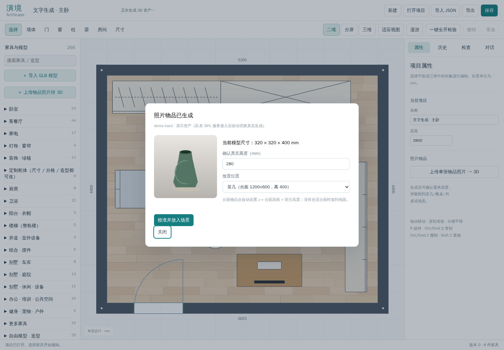
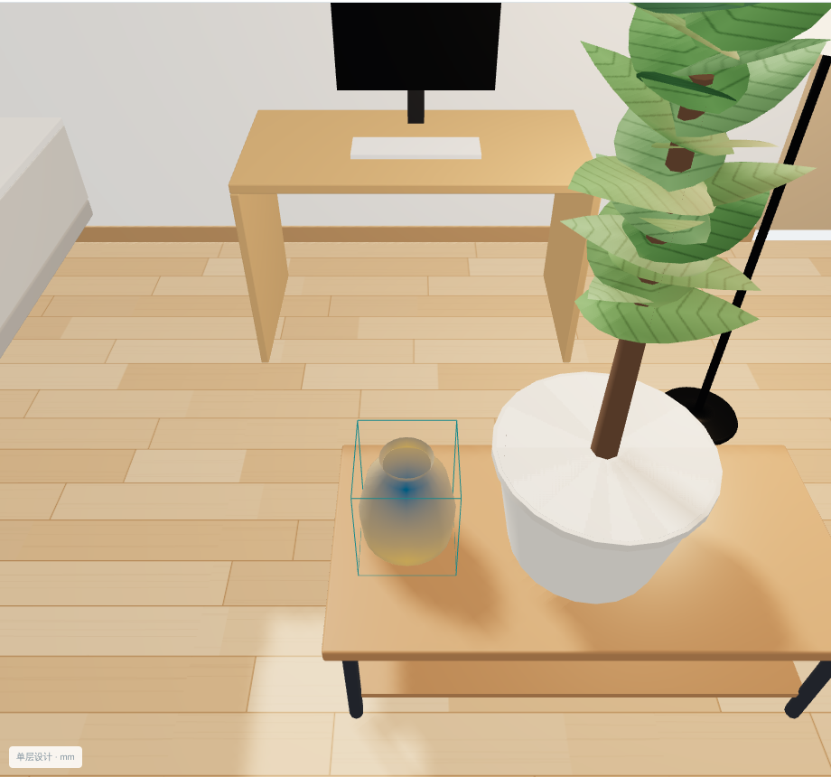

sha256(图片) 命中 data/real-generated-assets/，1 秒读取真实 V100 产物；isRealGeneration=true。
未命中且配置 ASSET_SERVICE_URL，转发成员二 POST /api/v1/jobs；返回 202 + pollUrl，前端轮询，不阻塞。
队友 GPU 未接入或远端失败时使用固定样例；明确标记“演示资产”，不冒充真实生成，场景仍可完整演练。
POST /api/assets/generate-from-image · GET /api/assets/jobs/:id · POST /api/assets/:assetId/calibrate · GET /api/assets/providers | 远端契约：POST /api/v1/jobs · GET /api/v1/jobs/:id · GET /api/v1/assets/:id/model（X-API-Key / Idempotency-Key）